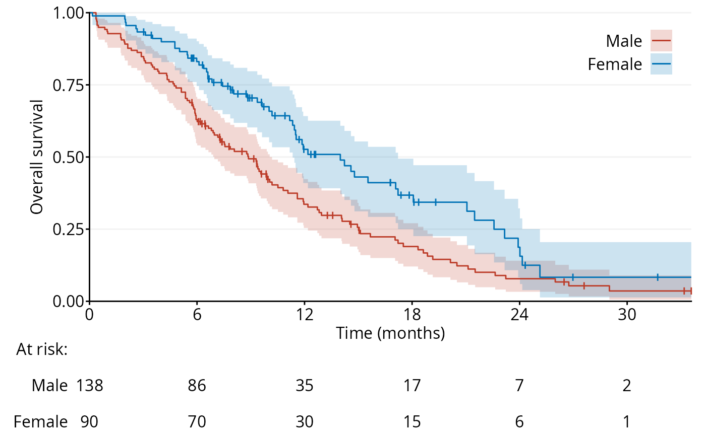
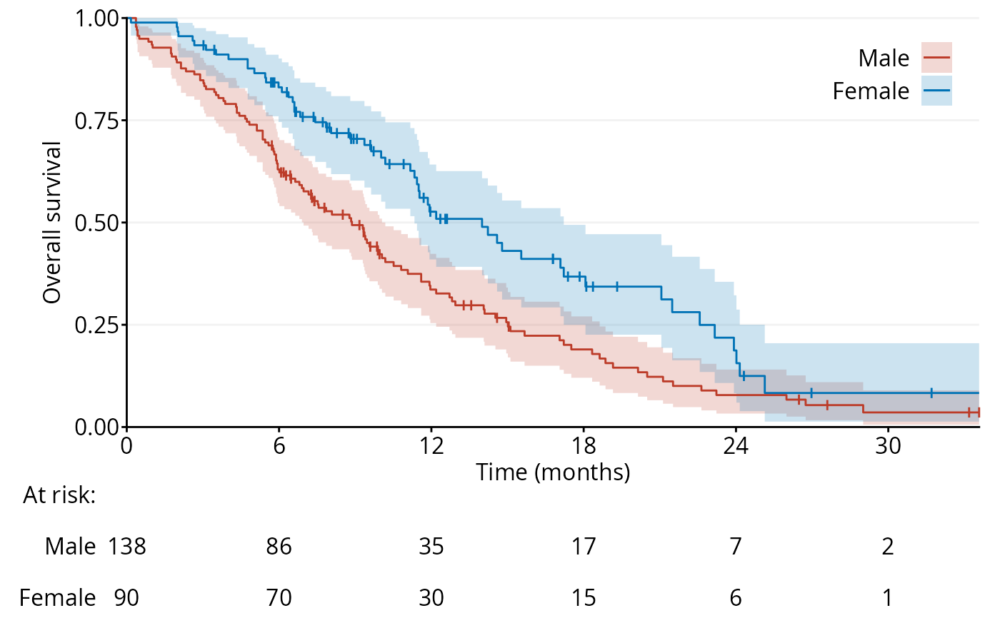

Generates a Kaplan–Meier plot with optional confidence intervals and risk table.
Usage
ggKM(
time,
status,
group = NULL,
breaks.s = seq(0, 1, 0.25),
breaks.t = NULL,
CI = "cloglog",
CI.alpha = 0.2,
colors = (ggsci::pal_nejm())(8),
grid.color = grDevices::rgb(0.95, 0.95, 0.95),
grid.s = seq(0, 1, 0.25),
grid.t = NULL,
grid.width = 0.5,
legend.direction = "vertical",
legend.just = "center",
legend.label.pos = "left",
legend.labels = NULL,
legend.ncol = NULL,
legend.nrow = NULL,
legend.pos = c(0.9, 0.9),
legend.text.align = 1,
line.width = 0.5,
line.height = 0.025,
risk.table = TRUE,
risk.table.margin = 16,
risk.table.prop = 0.2,
textsize.axis = 12,
textsize.legend = 12,
textsize.risk = 12,
title.s = "Survival",
title.t = "Time"
)Arguments
- time
Numeric vector of follow-up times.
- status
Integer vector event indicator (
1= event,0= censored).- group
Optional integer vector grouping variable.
- breaks.s
Y-axis (survival) tick marks. Default =
seq(0, 1, 0.25).- breaks.t
X-axis (time) tick marks. Default =
seq(0, max(time), by = 12).- CI
String indicating the CI type (or a custom function; see Details):
"none": nonePointwise confidence intervals:
"cloglog"(default): Greenwood's variance¹ with complementary log–log transformation²"modcloglog":"cloglog"with the lower confidence limit modified according to the effective sample size at each censored observation³"Rothman": Rothman's binomial method⁴ (via theWHKMconfpackage)"TG": Thomas–Grunkemeier likelihood-ratio method⁵ (via theWHKMconfpackage)"BPCP": beta product confidence procedure⁶ (via thebpcppackage)
Simultaneous confidence bands:
"Nair": Nair's log-transformed equal precision method⁷ (via theWHKMconfpackage)"HM": Hollander–McKeague likelihood-ratio method⁸ (via theWHKMconfpackage)
- CI.alpha
Alpha transparency of the confidence intervals. Default =
0.2.- colors
Vector of colors of the survival curves. Default =
ggsci::pal_nejm()(8).- grid.color
Gridline color. Default =
grDevices::rgb(0.95, 0.95, 0.95).- grid.s
Horizontal gridline positions. Default =
seq(0, 1, 0.25).- grid.t
Vertical gridline positions. Default =
NULL.- grid.width
Gridline thickness. Default =
0.5.- legend.direction
Legend orientation; either
"vertical"(default) or"horizontal".- legend.just
Alignment anchor for the legend relative to its position. Can be a single keyword (e.g.,
"center"), a keyword pair specifying horizontal and vertical justification (e.g.,c("left", "top"),c("right", "bottom")) respectively, or a numeric vector of length 2 giving relative coordinates within the plot area. Default ="center".- legend.label.pos
Legend label position (
"left"or"right") relative to the legend symbol. Default ="left".- legend.labels
Character vector of group labels.
- legend.ncol
Integer specifying the number of columns in the legend. Default =
NULL.- legend.nrow
Integer specifying the number of rows in the legend. Default =
NULL.- legend.pos
Position of the legend. Can be a keyword such as
"none","left","right","bottom", or"top", or a numeric vector of length 2 giving relative coordinates within the plot area. Default =c(0.9, 0.9). Set to"none"ifgroupisNULL.- legend.text.align
Legend text alignment:
0= left,0.5= center,1= right. Default =1.- line.width
Line width survival curves and censor marks. Default =
0.5.- line.height
Height of censor marks. Default =
0.025.- risk.table
Logical; if
TRUE, show risk table. Default =TRUE.- risk.table.margin
Numeric value specifying the horizontal spacing between the risk table labels and the risk table. Default =
16.- risk.table.prop
Relative height of the risk table. Default =
0.2.- textsize.axis
Axis text size. Default =
12.- textsize.legend
Legend text size. Default =
12.- textsize.risk
Risk table text size. Default =
12.- title.s
Y-axis (survival) title. Default =
"Survival".- title.t
X-axis (time) title. Default =
"Time".
Details
A custom function passed to CI is called once per group in an environment
containing the following variables:
.time: Numeric vector of follow-up times for the currentgroup.status: Integer vector event indicator (1= event,0= censored) for the currentgroup
The custom function must return a data.frame with the following columns:
$time: unique event times$surv: survival estimate$lower: lower confidence limit$upper: upper confidence limit
References
Greenwood, M., 1926. A report on the natural duration of cancer. In: Reports on Public Health and Medical Subjects, 33, pp. 1–26. London: Her Majesty’s Stationery Office, Ministry of Health.
Klein, J.P., Logan, B., Harhoff, M. and Andersen, P.K., 2007. Analyzing survival curves at a fixed point in time. Statistics in Medicine, 26(24), pp. 4505–4519.
Dorey, F.J. and Korn, E.L., 1987. Effective sample sizes for confidence intervals for survival probabilities. Statistics in Medicine, 6(6), pp. 679–687.
Rothman, K.J., 1978. Estimation of confidence limits for the cumulative probability of survival in life table analysis. Journal of Chronic Diseases, 31(8), pp. 557–560.
Thomas, D.R. and Grunkemeier, G.L., 1975. Confidence interval estimation of survival probabilities for censored data. Journal of the American Statistical Association, 70(352), pp. 865–871.
Fay, M.P., Brittain, E.H. and Proschan, M.A., 2013. Pointwise confidence intervals for a survival distribution with small samples or heavy censoring. Biostatistics, 14(4), pp. 723–736.
Nair, V.N., 1984. Confidence bands for survival functions with censored data: a comparative study. Technometrics, 26, pp. 265–275.
Hollander, M. and McKeague, I.W., 1997. Likelihood ratio-based confidence bands for survival functions. Journal of the American Statistical Association, 92(437), pp. 215–226.
Examples
data <- survival::lung
fig1a <- ggKM(data$time * 12 / 365.2425, data$status - 1, data$sex,
breaks.t = seq(0, 30, 6), legend.labels = c("Male", "Female"),
title.s = "Overall survival", title.t = "Time (months)")
print(fig1a)
 f.custom <- function() {
fit <- survival::survfit(survival::Surv(.time, .status) ~ 1,
conf.type = "plain")
return(data.frame("time" = fit$time, "surv" = fit$surv,
"lower" = fit$lower, "upper" = fit$upper))
}
fig1b <- ggKM(data$time * 12 / 365.2425, data$status - 1, data$sex,
breaks.t = seq(0, 30, 6), legend.labels = c("Male", "Female"),
title.s = "Overall survival", title.t = "Time (months)",
CI = f.custom)
print(fig1b)

f.custom <- function() {
fit <- survival::survfit(survival::Surv(.time, .status) ~ 1,
conf.type = "plain")
return(data.frame("time" = fit$time, "surv" = fit$surv,
"lower" = fit$lower, "upper" = fit$upper))
}
fig1b <- ggKM(data$time * 12 / 365.2425, data$status - 1, data$sex,
breaks.t = seq(0, 30, 6), legend.labels = c("Male", "Female"),
title.s = "Overall survival", title.t = "Time (months)",
CI = f.custom)
print(fig1b)
